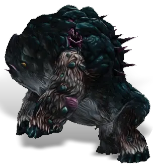

Открыть в интерактивной вики →

| Уровень | лёгк. 115 / норм. 135 / тяжел. 165 |
|---|---|
| Зоны атаки | ближняя, дальняя, ментальная |
| Шанс дропа 100% — уровни | лёгк. 1-100 / норм. 1-100 / тяжел. 1-140 |
| Шанс дропа 90% — уровни | лёгк. 101-140 / норм. 101-140 / тяжел. -- |
| Шанс дропа 70% — уровни | -- |
| Группа боссов | Тревога |
| Сила (PvE) | лёгк. 7550 / норм. 12 070 / тяжел. 16 723 |
| Аспект | Farao |
| Здоровье | лёгк. 25 000 / норм. 72 000 / тяжел. 130 000 |
| Мана | лёгк. 13 600 / норм. 27 200 / тяжел. 27 200 |
| Выносливость | лёгк. 13 600 / норм. 27 200 / тяжел. 27 200 |
Локация
- Пещера подо льдом
- Пещеры подо льдом
- Яма Воуга
Навыки


Дроп


Требования для входа

Как добраться
- Яма Воуга — путь: Гарнизон Дмортер → Замерзшее Озеро → Подо Льдом → Яма Воуга
Умения
 Вымеренный Удар Вымеренный Удар — обычная атака, удар головой, таран
Вымеренный Удар Вымеренный Удар — обычная атака, удар головой, таран- Групповая дальняя атака — бросок камнем
 Толстокожесть Толстокожесть — боевой клич, посвящение, теневая аура, ярость, рёв
Толстокожесть Толстокожесть — боевой клич, посвящение, теневая аура, ярость, рёв
Иммунитеты / особые умения
Устойчивость к обездвиживанию
Устойчивость перед лицом смерти